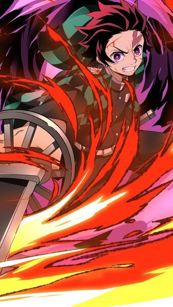
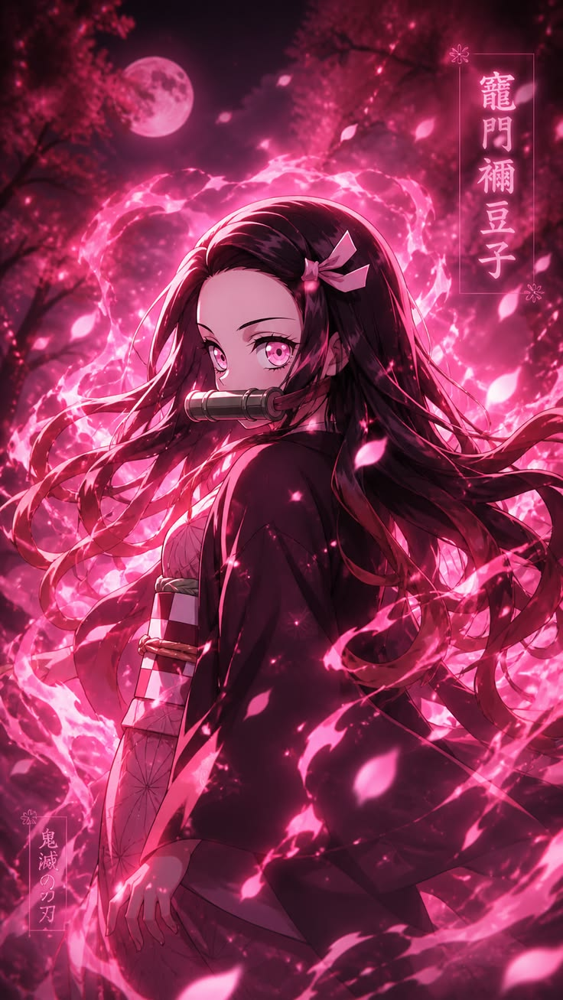
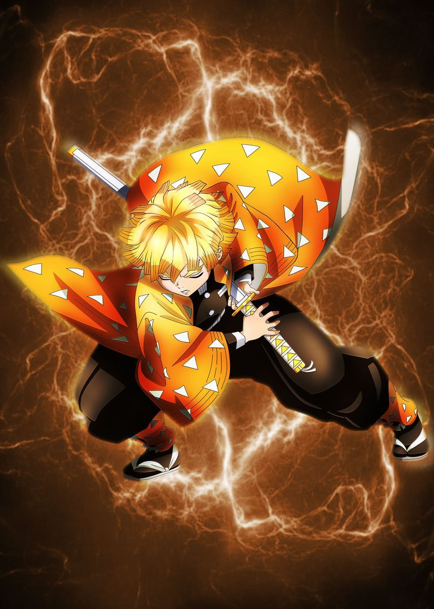
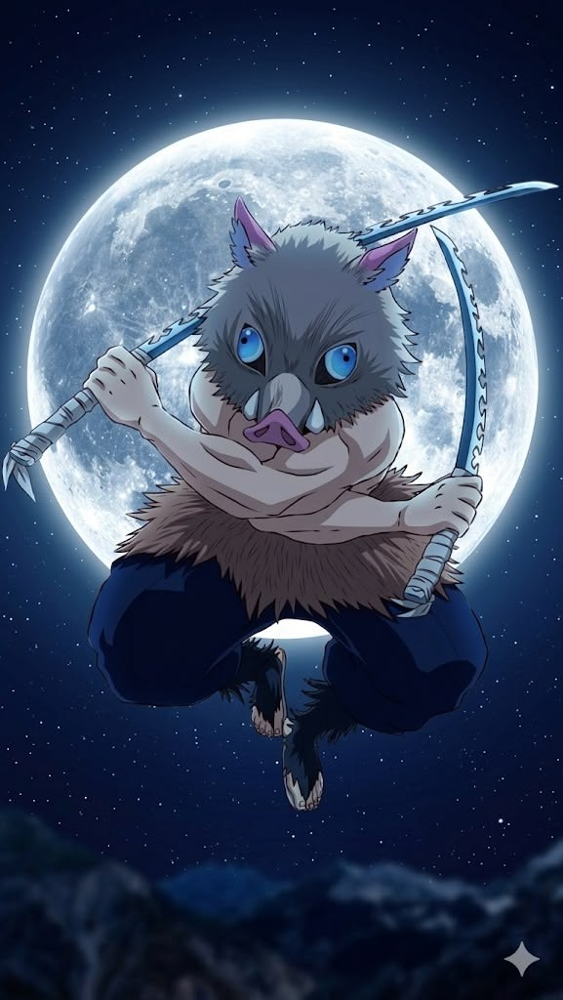
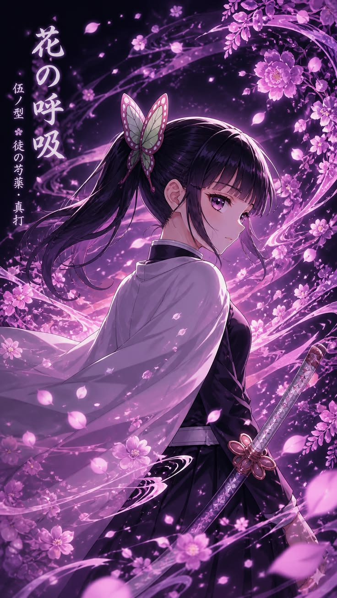
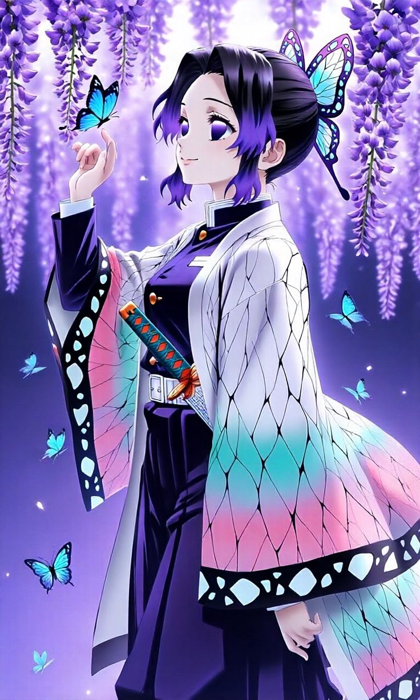
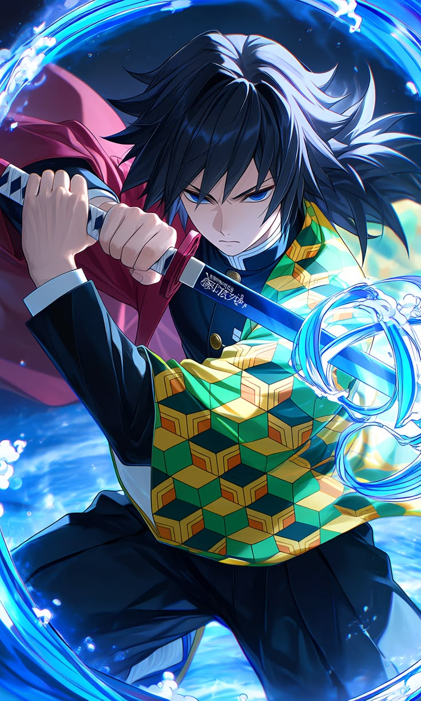
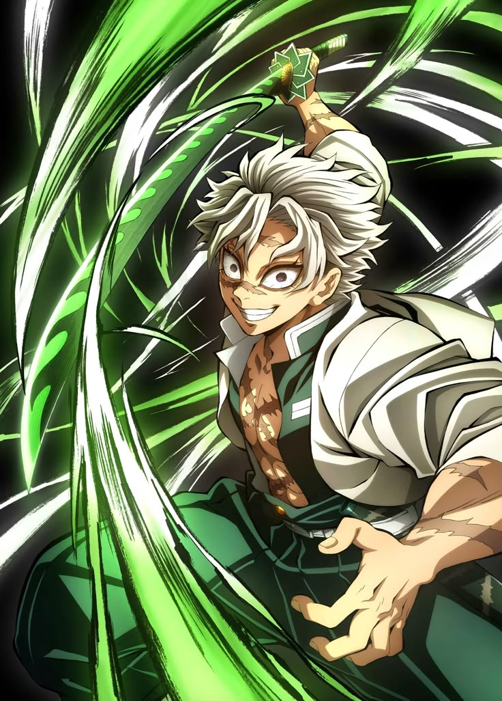

Tanjiro Kamado

El protagonista de la historia, un joven amable y valiente que se convierte en cazador de demonios para salvar a su hermana Nezuko.

El protagonista de la historia, un joven amable y valiente que se convierte en cazador de demonios para salvar a su hermana Nezuko.

La hermana menor de Tanjiro, convertida en demonio pero aún conserva su humanidad y protege a su hermano.

Un cazador de demonios cobarde pero poderoso, conocido por su habilidad con el rayo.

Un cazador de demonios salvaje y agresivo, criado por jabalíes, que lucha con dos espadas.

Una cazadora de demonios tranquila y reservada, entrenada por Shinobu Kocho, con habilidades excepcionales.

Una cazadora de demonios experta en venenos, conocida por su sonrisa constante y su actitud calmada.

Un cazador de demonios serio y reservado, conocido por su habilidad con el agua y su papel como mentor de Tanjiro.

Un cazador de demonios impulsivo y agresivo, conocido por su habilidad con el viento y su papel como Pilar del Viento.
Y más personajes...